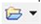

This Help topic gives an overview of the Rails Shell View.
Contents |
Introduction
The Rails Shell (shown below) is a console for rails commands. If you are familiar with rails commands and arguments on the command line such as rails, script/generate, script/plugin, gem, rake, etc, use the Rails Shell to manipulate and navigate your projects. If you are comfortable with working with the command line, you may find the Rails Shell faster than using the GUI. The Rails Shell contains most of the functionality of each of the Rails Plugins, Rake Tasks, RubyGems, New Project Wizard, and Generators views.
{kind=link}
Instructions
This section describes how to display and work with the Rails Shell View.
Displaying the Rails Shell View
The Rails Shell is available as part of the Console View. To display the Rails Shell, click the Open Console menu button  and select Open a Rails Shell from the drop-down list (shown below).
and select Open a Rails Shell from the drop-down list (shown below).
{kind=link}
The Console View will display your Rails Shell View.
Using the Rails Shell View
Use your Rails Shell enter commands, see your output inline, and otherwise operate on your selected project. The Rails Shell differs from the traditional console in that all commands and their output get appended to the same view, instead of each command spawning off its own console. This allows you to see the command history, and also avoids multiple consoles opening up for a series of commands.
Please note that script/server and script/console both spawn off their launches in separate console due to their long-lived nature.
The console commands apply to the current project selection for the shell. The Rails Shell appends the current project's name to the shell's title (e.g. "Rails Shell – project_name"). To change the project to work on, you can click the Change Project button , or use the switch or cd commands inside the shell. If you generate a new rails project (inside the shell or not), it will automatically switch to the new project. If you run a command on a project other than the shell's current project from one of the GUI views (like Generators, or Rails Plugins), the shell will be switched to that project.
{kind=link}
The Rails Shell also offers completions for commands it is aware of and some of their arguments and options (shown below).
{kind=link}
The Rails Shell also allows you to run the commands under the debugger by preceding the command with "debug", for example: "debug script/server".